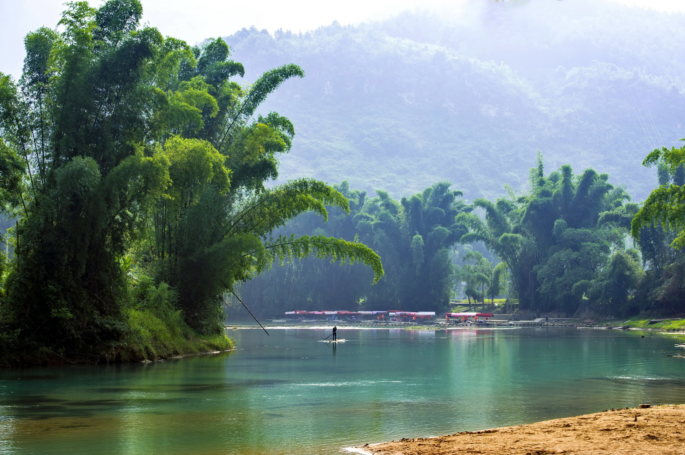
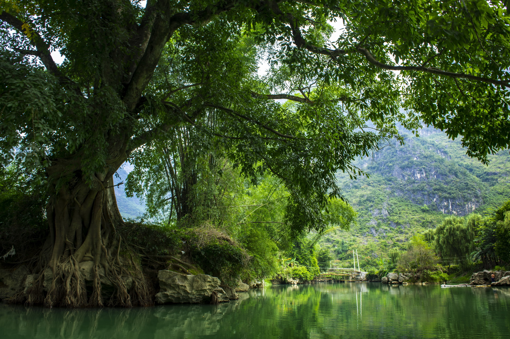
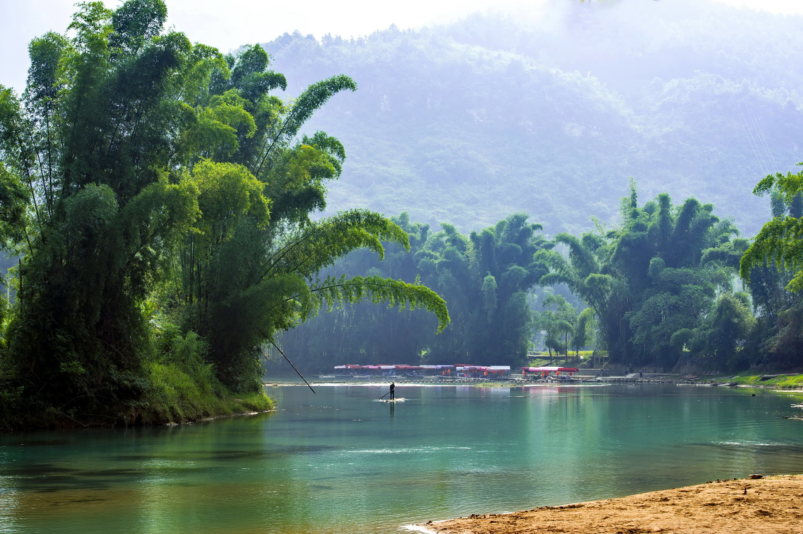
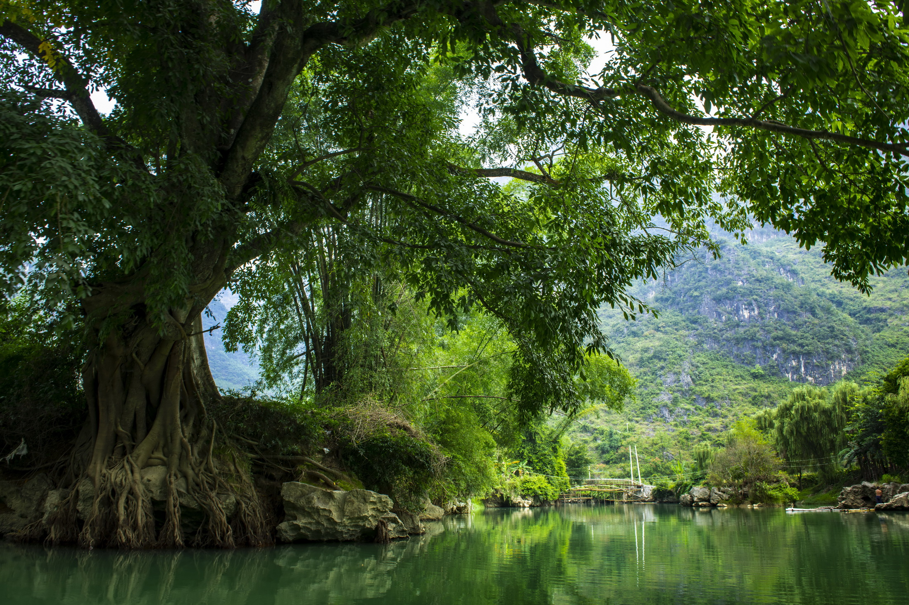

关于大小井
罗甸大小井，体验“东方洞穴博物馆”的奇迹。集溶洞、天坑、河流为一体，展现喀斯特地质的壮丽。必看：探秘幽深溶洞，欣赏天坑奇观。
Luodian Daxiaojing, experience the "Oriental Cave Museum" miracle. It integrates caves, sinkholes, and rivers, showcasing magnificent karst geology. Must-sees: Explore deep caves, admire sinkhole wonders.
Luodian Daxiaojing, découvrez le miracle du « Musée Oriental des Grottes ». Il intègre grottes, dolines et rivières, présentant une géologie karstique magnifique. À voir absolument : Explorez les grottes profondes, admirez les merveilles des dolines.

 



主要特色
- 水上风光：乘船游览，景色宜人。
- 溶洞探奇：探索神秘的喀斯特溶洞。
- 田园景色：山水环绕的村庄，宁静祥和。
- 天坑景观：大自然的鬼斧神工。
游玩小贴士
建议游玩时间2-3小时。适合家庭出游，水上活动较为平缓。注意保护环境，不乱扔垃圾。